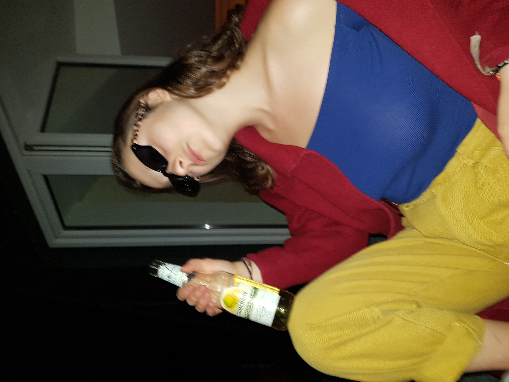

Ten jeden raz, cofnij się ze mną w czasie i przeżyj to jeszcze raz!
Kochanie, przepraszam, że na końcu nie byłem taki jaki chciałaś. Czuję, że wszystko mogło potoczyć się zupełnie inaczej gdyby nie te wszystkie skrajności losu. Zanim cofniemy się w czasie chcę ci tylko powiedzieć, że jesteś najcudowniejszą osobą, którą kiedykolwiek poznałem. Twoje serduszko jest tak wielkie, że mój rozum nie umie tego pojąć. Jesteś silna i bardzo odważna co zawsze w tobie podziwiałem. Mimo, że jesteśmy inni nigdy nie uznam, że nie pasujemy do siebie. Moim zdaniem pasujemy idealnie. Tylko dwa przeciwne do siebie puzzle mogą zostać połączone. Wyciągałaś ze mnie wszystko co najlepsze, zawsze. Kocham cię i nigdy nie przestanę, ponieważ (mimo, że nie mam takiego wielkiego serduszka jak ty) wiem, że jesteś dla mnie tą jedną i nie wierzę, że mnie nie kochasz. Nie wierzę, że te wszystkie lata spędzone razem były po prostu twoim złym życiowym wyborem. Rozumiem, że teraz jest twój czas na eksplorowanie świata materialnego i duchowego. Mam nadzieję, że kiedyś przypomnisz sobie o mnie jeszcze raz i napiszesz do mnie czy nie chcę się spotkać na Ginger Ale. Nie ważne ile lat. Nie wiem jak się moje życie potoczy ale to co wiem to, że twoje potoczy się bajecznie! Chcę kiedyś jeszcze móc dzielić to życie z tobą. Yours Truly Koala
Rok 2015

Czy ty sobie wyobrażasz jak dawno temu to było?! Przy każdym roku masz guzik piosenki, która reprezentuje moje odczucia dotyczące tego okresu. Zawsze lubiłem jak piosenka mi coś opisuje a najbardziej lubiłem piosenki, które opisują nasze wspólne życie. Mimo chodzenia do tego samego gimnazjum to jest rok w którym cię poznałem. Na sam koniec roku po raz pierwszy zobaczyłem osobę, która jest totalnie szalona, piękna ale co najważniejsze totalnie szczęśliwa. Od tego pamiętnego Halloween wiedziałem, że muszę cię lepiej poznać. Zaczęliśmy pisać do siebie i byłem tak niezwykle szczęśliwy, że chciałaś wchodzić ze mną w polemikę. Pisaliśmy przez cały czas! Poznawaliśmy się od początku. Spostrzegłem, że twoje życie nie wydaje ci się takie szczęśliwe jak to pokazujesz a mimo wszystko potrafiłaś sprawić uśmiech na twarzy wszystkich wokół ciebie. 30 Grudnia obiecaliśmy sobie, że ten dzień będzie naszym sekretnym sylwestrem. Mimo, że ten plan się nie powiódł, ten pomysł trzymam w sercu do dziś, ponieważ bardzo podobał mi się pomysł na posiadanie takiego jednego dnia, który tylko my znamy. Po raz pierwszy pojawiło się MY.
Rok 2016

Ten rok mimo, że rozpoczął się dla mnie cudownie to nie był przyjemny. Mimo, że był to najbardziej produktywny rok w moim życiu, to nie był przyjemny. Na początku nic się nie zapowiadało na zmianę relacji ale kiedy zapytałem się ciebie czy chciałabyś być ze mną to powiedziałaś, że nie chciałaś być z nikim. Zabolało mnie to straszliwie ale nie tak jak twój związek chwilę później. Czułem, że muszę się wydostać z mojego świata, którym nabierał szarości z każdą myślą. Idealna okazja, którą były Stany pozwoliła mi na reset. Mimo bardzo małej komunikacji między nami, nie było tygodnia kiedy bym o tobie nie myślał. Byłem szczęśliwy i głodny poznawania więcej, kultury, ludzi i wszystkiego mnie otaczającego ale wciąż czegoś mi brakowało. Po latach wiem, że to byłaś TY. W tym roku ED SHEERAN wydał swoją płytę Divide a mi wszystkie piosenki kojarzyły się z tobą. Miałem kilka dziewczyn do których czułem wielkie emocje ale mimo wszystko zawsze gdzieś tam z tyłu głowy byłaś ty.
Rok 2017

Ten rok rozpoczÄ…Å‚ się 10 Czerwca. Powrót do Polski. Zaczęliśmy pisać chwilę wcześniej a w tym właśnie tygodniu rozstałaś się z chłopakiem. Mimo ciężkiej pracy jaką włożyłem przez ostatni rok akademicki, żeby móc â€move on†nie udało się. Od mojego przyjazdu byliśmy nierozłączni. Spotykaliśmy się prawie codziennie. Nasze spacery pod most, pierwszy Opener jak również Woodstock były chwilami samymi w sobie niezapomnianymi. Sama twoja obecność mimo, że bez związku była dla mnie bardzo ważna. Pozwoliło mi to odnaleźć siebie w życiu. Nie tylko stronę, którą już znałem ale również tę, którą dopiero odkrywałem. Stronę szczęścia z małych rzeczy. Browarki na dachu czy festiwal kuchni wegańskiej w warszawie (Ten Kebab wyglądał tak smacznie!) pozwoliły mi spędzić z tobą więcej czasu. Niczego lepszego nie mógłbym sobie wymarzyć.
Rok 2018

Rok bardzo zwariowany. Rozpoczęła się moja ciężka praca w Liceum, kiedy twoja się kończyła. Mieliśmy wiele starć i złości. Przez cały czas urywaliśmy nasz kontakt, żeby tylko zaraz z powrotem do niego wracać. Do dzisiaj bardzo żałuje, że nie mogłem być na twojej studniówce. Nasz wyjazd do trójmiasta uważam za bardzo udany. Może ty pamiętasz, czy my finalnie zjedliśmy Gdyniankę? Był to twój rok wyborów. Wielu wyborów. Tego też roku miałem najgorszą rozmowę telefoniczną swego życia. Nigdy nie zapomnę tego momentu, kiedy stałem pod wieżowcem, w którym miałem staż a ty mówiłaś mi, że nie chcesz utrzymywać ze mną już żadnego kontaktu. Tego dnia coś we mnie pękło. Pierwszy raz faktycznie w NAS zwątpiłem. Na moje szczęści, nie na długo. Mimo tego wszystkiego był to też najpiękniejszy rok w moim życiu. W listopadzie staliśmy się parą. Moja euforia nie miała końca! To szczęści szybko przemieniło się w strach. Co jeśli to nie będzie to czego oczekiwałaś? To by było znacznie gorsze niż nigdy nie bycie razem. Co jeśli kochasz mnie z przywiązania a nie z miłości? Te pytania nie miały w mojej głowie końca i nie umiałem na nie odpowiedzieć. Aż do teraz.
Rok 2019
Strasznie wymagający rok, który rozpoczął się od wizyt w szpitalu. Szybko wróciłaś do zdrowia i moje kolejne marzenie się spełniło. Wyjazd na narty z przyjaciółmi. Oj nie mogłem znaleźć lepszego kompana. Narty, mimo mojego narzekania na twoją wolną jazdę były świetne. Uratowałaś nam samochód. Nawet Tatralandia nie była taka zła ale ty miałaś inne zdanie 😉. Pod norenami było świetnie i co gorsza będę bardzo tęsknił za tym miejscem, ponieważ bez ciebie to nigdy nie będzie to samo. Nie mogę oczywiście pominąć studniówki, która była przezabawna. Poszukiwanie ciebie bez telefonu zajęło mi chyba z 300 lat. Profesor, mówiący, że już wyszłaś i poszłaś na przystanek, ja próbujący naładować chociaż trochę telefon. Rewelacja! Za mało z tobą tańczyłem. Muszę nad tym mocno popracować ale wtedy tańczyło się świetnie. Tego roku też zrozumiałem, że jesteś ode mnie we wszystkim lepsza. Nawet w strzelaniu. Strzelnica była bardzo fajna mimo wszystko nie pojmuje fascynacji bronią. Kolejny Opener i co ważniejsze nasz wyjazd do Berlina. Bardzo żałuje tego wyjazdu. Czuję, że przez moje lenistwo zrobiliśmy prawie nic. Przepraszam cię za to. Byłaś taka cudowna, że poszłaś ze mną na zawody w CS i wytrzymałaś moje okropne zachowanie po porażce zespołu. Jesteś cudowna! I to straszne Lotnisko. Wtedy czułem, że nie mogłem czuć się gorzej. Teraz wiem, że to nie prawda. Smutek, który był spowodowany wyjechaniem od ciebie był przeszywający. Moim zdaniem to był właśnie początek końca. Strasznie się cieszyłem, że dałaś mnie radę odwiedzić w Londynie i mimo wielu kłótni bardzo dobrze wspominam ten czas. Koniec roku był straszny. Od zatrzymania mojego taty po pandemię, która miała przynieść nic dobrego.
Rok 2020

Nikt nie może tego roku uznać za dobry. Oczywiście były też lepsze momenty ale wszystko kalkulując nie mogliśmy podjąć gorszych decyzji. Decyzja o zamieszkaniu razem mimo, że wydawała się idealna była taka tylko dla mnie. Mimo, że oczywiście też chciałaś to czułem, że coś jest nie tak ale kompletnie nie potrafiłem sobie powiedzieć jak mógłbym to naprawić. Po długim czasie niewidzenia się zostaliśmy zamknięci w czterech ścianach z naszymi problemami i uzależnieniami. Nie potrafiłem sobie poradzić z moim mimo, że naprawdę bardzo chciałem. Nasz wyjazd do Szwecji był bardzo pomocny, ponieważ czułem, że wtedy właśnie odzyskałaś część swojej duchownej siły. Moja tęsknota za tobą była bardzo wielka ale w głębi serca bardzo się cieszyłem, że jesteś tam gdzie wtedy powinnaś być. Razem odczuwaliśmy, że byliśmy nie doceniani przez cały czas a bolało nas to jeszcze bardziej, ponieważ razem bardzo się staraliśmy to wszystko naprawić. Nie starczyło czasu. Przez tyle cierpienia wiem, że wszystkie te lepsze chwilę zapamiętam na zawsze.
Rok 2021

No i nadszedł ten straszny rok. Wiem, że nowy rok nie był taki jak sobie go wymarzyłaś ale w tym paragrafie nie będę jak raz mówił o przeszłości a o teraźniejszości i przyszłości. Nie umiem powiedzieć dlaczego czuję, że twoje słowa o braku miłości do mnie nie są prawdziwe. Wszystko się zawsze zmienia i jest to jedyna niezmienna zasada. Na pierwszym miejscu zawszę będę chciał twojego szczęścia. Wszystkie decyzję muszą być twoje i tylko w ten sposób zaznasz prawdziwego szczęścia. Nie ważne co zdecydujesz dalej i jak twoje życie się potoczy chcę byś wiedziała, że nigdy nie przestanę być szalony za tobą. Różnimy się i w wielu kwestiach możemy się nie zgadzać ale wiem, że sprawiasz, że jestem lepszą osobą i sądzę, że działa to w obie strony. Cała nasza historia jest równie szalona co my ale w niej znajduje się jeden morał. Nie możemy bez siebie żyć. Nasze drogi często się rozchodzą ale w mgnieniu oka od razu się ponownie krzyżują. Za każdym razem czuję, że jesteśmy lepsi ze sobą. Pamiętasz to pytanie, które sobie zadawałem (Co jeśli kochasz mnie z przywiązania a nie z miłości?), wiem, że to nie tak działa. Miłość jest tylko jedna i wynika z wielu różnych powodów ale uczucie jest zawsze takie samo i dąży do tego samego. Jeśli nie jutro to pojutrze a jak nie pojutrze to za kilka dni ale wiem, że MY jeszcze się nie skończyliśmy. I love you babe
Nasza galeria



Najlepsze Video :P
Najlepsze Video :P
A co się stało dalej?
18 Marca 2021
Dwudziestego trzeciego marca miną dwa miesiące od kiedy nie jesteśmy razem. Jak się mam z tym wszystkim pogodzić? Czas leci do przodu i na szczęście jest czasami wiele rzeczy do roboty. Najgorsze jest to, że coraz bardziej czuję się smutny. Zachowujesz się w stosunku do mnie strasznie oschło a mimo wszystko czuję się smutno zamiast po prostu być zły. Przez te dwa miesiące pisałaś do mnie wyłącznie wtedy kiedy czegoś potrzebowałaś. Wciąż nie rozumiem jak potrafisz sobie tłumaczyć napisanie do mnie by odzyskać jakieś rzeczy a nie potrafisz wytłumaczyć sobie zapytania jak się czuję. Innym problemem okazuje się Netflix. Osobiście chciałbym do końca świata i dzień dłużej mieć cię u siebie na koncie ale z drugiej strony czuję, że to nie jest dla mnie dobre. Czuję się przez to trochę wykorzystywany. Tylko, że to uczucie nie ima się do tego jak bardzo mi zależy na twoim szczęściu. Nie umiem tego wszystkiego pojąć. Na koniec związku czułem się już strasznie przytłoczony. Moje samopoczucie znacząco spadało z każdym miesiącem ale mimo wszystko, ta dziwna siła powodowała, że nie przeszkadzało mi to. Jestem przekonany, że moje życie na pewno kiedyś wróci do normy ale za ile to będzie? Równocześnie z biegiem czasu nasuwa się tyle strasznych pytań. Co to jest miłość i czy każda miłość jest warta tyle samo? Długo zastanawiałem się, która piosenka najlepiej oddaje tę chwilę. Wybrałem â€somebody that i used to knowâ€
Now and then I think of when we were together
Like when you said you felt so happy you could die
Told myself that you were right for me
But felt so lonely in your company
But that was love and it's an ache I still remember
You can get addicted to a certain kind of sadness
Like resignation to the end, always the end
So when we found that we could not make sense
Well, you said that we would still be friends
But I'll admit that I was glad it was over
But you didn't have to cut me off
Make out like it never happened and that we were nothing
And I don't even need your love
But you treat me like a stranger and that feels so rough
No, you didn't have to stoop so low
Have your friends collect your records
And then change your number
I guess that I don't need that though
Now you're just somebody that I used to know
Now you're just somebody that I used to know
Now you're just somebody that I used to know
Myślę, że możesz mnie tak traktować, ponieważ dla ciebie to jest równie ciężkie i po prostu chciałaś się mnie pozbyć, gdyż przypominam ci o przeszłości. Czuję się zdradzony przez moje własne serce. Rozum mówi, że to może być dobra strategia jednak serce mówi, że to nie jest słuszna droga. Siedząc i pisząc widzę tylko łzy przez, które patrzę na ciebie mówiącą
â€Nie jestem częścią twojego życiaâ€
Co to jest?
Na pewno nie miłość
Or is it?
27 Kwietnia 2021
Ile to za długo? 27 Kwietnia 2021 roku. Moje życie leci do przodu. Wszystko nawet zaczęło się układać po wstępnej załamce. Jednak jak długo jeszcze będę myślał o tobie? Co gorsza wszystko co tutaj napisałem nadal jest zgodne z prawdą. Chyba jest lepiej, ponieważ teraz uderza we mnie tylko straszna tęsknota. Tyle razy od zerwania chciałem z tobą porozmawiać, popisać, pośmiać się. Jednak wiedziałem, że to nie jest dobry pomysł. Mimo tak ciężkiej pracy włożonej przeze mnie, natrafimy na siebie podczas spacer. Kurewski los. Nie mam innych na to słów. Nie mogłem się pozbierać przez dobrą godzinę. To już nie był płacz i histeria jak wcześniej. To był klasyczny smutek. Chciałem tak wiele razy cię zobaczyć i z tobą porozmawiać. W ciągu jednego dnia straciłem najważniejszą osobę w moim życiu. To wcale nie jest wyolbrzymienie. Byłaś jedyną osobą, której mówiłem wszystko. Byłaś w całkowitym tego słowa znaczenie â€The Oneâ€. Jestem trochę tym wszystkim załamany. Nie wiem co właściwie teraz czuję. Nie chcę być z tobą. Nie chcę też być bez ciebie tak jak teraz. Najbardziej ubolewam, ponieważ widzę, że mój największy strach stał się faktem. Stałem się po prostu dla ciebie pewną historią, którą zamknęłaś za sobą. Wrzucony do szuflady â€eksówâ€. Chciałbym, żeby to co teraz wciąż czuje nie było prawdą. Chciałbym czuć do ciebie nienawiść, wściekłość albo pójść twoją drogą i po prostu obojętność, ale coś jest nie tak. Ciekawy jestem czy zdarza ci się czytać to co piszę, jeśli tak to proszę pozdrów ode mnie całą swoją rodzinę. Ile to za długo by przestać o tobie myśleć?
Chciałbym dziś jeszcze zawrzeć jedną myśl, która przeszła mi przez głowę przy spotkaniu z wami i odnosi się do Gosi. Czuję, że byłem bardzo nie miły i to było bardzo nie niegrzeczne z mojej strony. Ponownie, jeśli to czytasz to proszę przytul ją ode mnie i przeproś w moim imieniu. Gosia stała się pewną formą wszystkich moich leków związanych ze stratą ciebie. Przez to, że zawsze jeździła z tobą i słyszałem te historię jak bawiłaś się na tych wyjazdach to czułem ogromną zazdrość, że ona a nie ja była ich częścią.
P.S. – Wyglądałaś na szczęśliwą jak za dawnych czasów. Bardzo się z tego cieszę. Całym sercem.
18 Marca 2021
Dwudziestego trzeciego marca miną dwa miesiące od kiedy nie jesteśmy razem. Jak się mam z tym wszystkim pogodzić? Czas leci do przodu i na szczęście jest czasami wiele rzeczy do roboty. Najgorsze jest to, że coraz bardziej czuję się smutny. Zachowujesz się w stosunku do mnie strasznie oschło a mimo wszystko czuję się smutno zamiast po prostu być zły. Przez te dwa miesiące pisałaś do mnie wyłącznie wtedy kiedy czegoś potrzebowałaś. Wciąż nie rozumiem jak potrafisz sobie tłumaczyć napisanie do mnie by odzyskać jakieś rzeczy a nie potrafisz wytłumaczyć sobie zapytania jak się czuję. Innym problemem okazuje się Netflix. Osobiście chciałbym do końca świata i dzień dłużej mieć cię u siebie na koncie ale z drugiej strony czuję, że to nie jest dla mnie dobre. Czuję się przez to trochę wykorzystywany. Tylko, że to uczucie nie ima się do tego jak bardzo mi zależy na twoim szczęściu. Nie umiem tego wszystkiego pojąć. Na koniec związku czułem się już strasznie przytłoczony. Moje samopoczucie znacząco spadało z każdym miesiącem ale mimo wszystko, ta dziwna siła powodowała, że nie przeszkadzało mi to. Jestem przekonany, że moje życie na pewno kiedyś wróci do normy ale za ile to będzie? Równocześnie z biegiem czasu nasuwa się tyle strasznych pytań. Co to jest miłość i czy każda miłość jest warta tyle samo? Długo zastanawiałem się, która piosenka najlepiej oddaje tę chwilę. Wybrałem â€somebody that i used to knowâ€
Now and then I think of when we were together
Like when you said you felt so happy you could die
Told myself that you were right for me
But felt so lonely in your company
But that was love and it's an ache I still remember
You can get addicted to a certain kind of sadness
Like resignation to the end, always the end
So when we found that we could not make sense
Well, you said that we would still be friends
But I'll admit that I was glad it was over
But you didn't have to cut me off
Make out like it never happened and that we were nothing
And I don't even need your love
But you treat me like a stranger and that feels so rough
No, you didn't have to stoop so low
Have your friends collect your records
And then change your number
I guess that I don't need that though
Now you're just somebody that I used to know
Now you're just somebody that I used to know
Now you're just somebody that I used to know
Myślę, że możesz mnie tak traktować, ponieważ dla ciebie to jest równie ciężkie i po prostu chciałaś się mnie pozbyć, gdyż przypominam ci o przeszłości. Czuję się zdradzony przez moje własne serce. Rozum mówi, że to może być dobra strategia jednak serce mówi, że to nie jest słuszna droga. Siedząc i pisząc widzę tylko łzy przez, które patrzę na ciebie mówiącą
â€Nie jestem częścią twojego życiaâ€
Co to jest?
Na pewno nie miłość
Or is it?
27 Kwietnia 2021
Ile to za długo? 27 Kwietnia 2021 roku. Moje życie leci do przodu. Wszystko nawet zaczęło się układać po wstępnej załamce. Jednak jak długo jeszcze będę myślał o tobie? Co gorsza wszystko co tutaj napisałem nadal jest zgodne z prawdą. Chyba jest lepiej, ponieważ teraz uderza we mnie tylko straszna tęsknota. Tyle razy od zerwania chciałem z tobą porozmawiać, popisać, pośmiać się. Jednak wiedziałem, że to nie jest dobry pomysł. Mimo tak ciężkiej pracy włożonej przeze mnie, natrafimy na siebie podczas spacer. Kurewski los. Nie mam innych na to słów. Nie mogłem się pozbierać przez dobrą godzinę. To już nie był płacz i histeria jak wcześniej. To był klasyczny smutek. Chciałem tak wiele razy cię zobaczyć i z tobą porozmawiać. W ciągu jednego dnia straciłem najważniejszą osobę w moim życiu. To wcale nie jest wyolbrzymienie. Byłaś jedyną osobą, której mówiłem wszystko. Byłaś w całkowitym tego słowa znaczenie â€The Oneâ€. Jestem trochę tym wszystkim załamany. Nie wiem co właściwie teraz czuję. Nie chcę być z tobą. Nie chcę też być bez ciebie tak jak teraz. Najbardziej ubolewam, ponieważ widzę, że mój największy strach stał się faktem. Stałem się po prostu dla ciebie pewną historią, którą zamknęłaś za sobą. Wrzucony do szuflady â€eksówâ€. Chciałbym, żeby to co teraz wciąż czuje nie było prawdą. Chciałbym czuć do ciebie nienawiść, wściekłość albo pójść twoją drogą i po prostu obojętność, ale coś jest nie tak. Ciekawy jestem czy zdarza ci się czytać to co piszę, jeśli tak to proszę pozdrów ode mnie całą swoją rodzinę. Ile to za długo by przestać o tobie myśleć?
Chciałbym dziś jeszcze zawrzeć jedną myśl, która przeszła mi przez głowę przy spotkaniu z wami i odnosi się do Gosi. Czuję, że byłem bardzo nie miły i to było bardzo nie niegrzeczne z mojej strony. Ponownie, jeśli to czytasz to proszę przytul ją ode mnie i przeproś w moim imieniu. Gosia stała się pewną formą wszystkich moich leków związanych ze stratą ciebie. Przez to, że zawsze jeździła z tobą i słyszałem te historię jak bawiłaś się na tych wyjazdach to czułem ogromną zazdrość, że ona a nie ja była ich częścią.
P.S. – Wyglądałaś na szczęśliwą jak za dawnych czasów. Bardzo się z tego cieszę. Całym sercem.